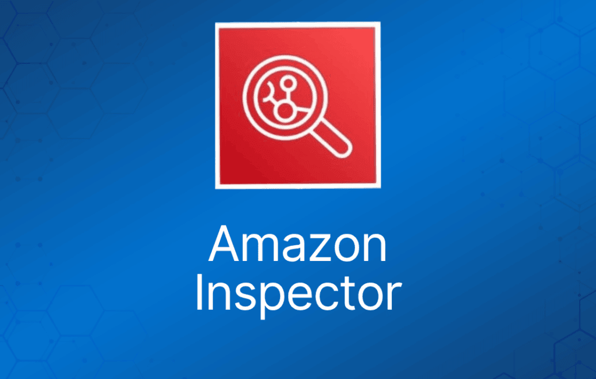

Amazon Inspector 是一项自动化安全评估服务，帮助提升部署在 AWS 上的应用的安全性与合规性。
Amazon Inspector 自动评估应用的暴露面、漏洞以及与最佳实践的偏差。
完成评估后，Amazon Inspector 会生成一份按严重程度排列的详细安全发现（finding）列表。
Amazon Inspector 测试你的 Amazon EC2 实例的网络可达性，以及运行在这些实例上的应用的安全状态。
Amazon Inspector 的安全评估帮助你检查 Amazon EC2 实例是否存在非预期的网络可达性，以及这些 EC2 实例上是否存在漏洞。
完成评估后，Amazon Inspector 会生成一份按严重程度组织的详细安全发现列表。
这些发现可以直接查看，也可以作为详细评估报告的一部分，通过 Amazon Inspector 控制台或 API 获取。
借助 Amazon Inspector，你可以在开发和部署流水线中自动化安全漏洞评估，或对静态的生产系统进行评估。
这让安全测试成为开发和 IT 运维的常规组成部分。
Inspector 的优势
配置扫描与活动监控引擎——Amazon Inspector 提供一个分析系统和资源配置的 agent。
内置内容库——Amazon Inspector 包含内置的规则和报告库。
通过 API 实现自动化——Amazon Inspector 可以通过 API 完全自动化。
Amazon Inspector Agent
Amazon Inspector 还提供称为 agent 的预定义软件，你可以选择将其安装在要评估的 EC2 实例的操作系统中。
agent 监控 EC2 实例的行为，包括网络、文件系统和进程活动。它还会收集大量行为和配置数据（遥测数据）。
规则与规则包
你可以使用 Amazon Inspector 评估你的评估目标（AWS 资源集合）中潜在的安全问题和漏洞。
Amazon Inspector 将评估目标的行为和安全配置与选定的安全规则包进行对比。
在 Amazon Inspector 中，规则（rule）是评估运行期间执行的一项安全检查。
Amazon Inspector 评估以预定义规则包的形式提供，映射到常见的安全最佳实践和漏洞定义。
内置规则示例包括：检查 EC2 实例是否可从互联网访问、是否启用了远程 root 登录、是否安装了有漏洞的软件版本。
这些规则由 AWS 安全研究人员定期更新。
一次 Amazon Inspector 评估可以使用以下规则包的任意组合：
网络评估
网络可达性（Network Reachability）——网络可达性规则包中的规则分析你的网络配置，以发现 EC2 实例的安全漏洞。Amazon Inspector 生成的发现还会提供关于限制不安全访问的指导。
主机评估
常见漏洞与暴露（Common vulnerabilities and exposures）——该规则包中的规则帮助验证评估目标中的 EC2 实例是否暴露于常见漏洞与暴露（CVE）。
互联网安全中心（CIS）基准——CIS 安全基准计划提供定义明确、中立、基于共识的行业最佳实践，帮助组织评估和改进其安全性。
Amazon Inspector 安全最佳实践——使用 Amazon Inspector 规则帮助确定你的系统配置是否安全。